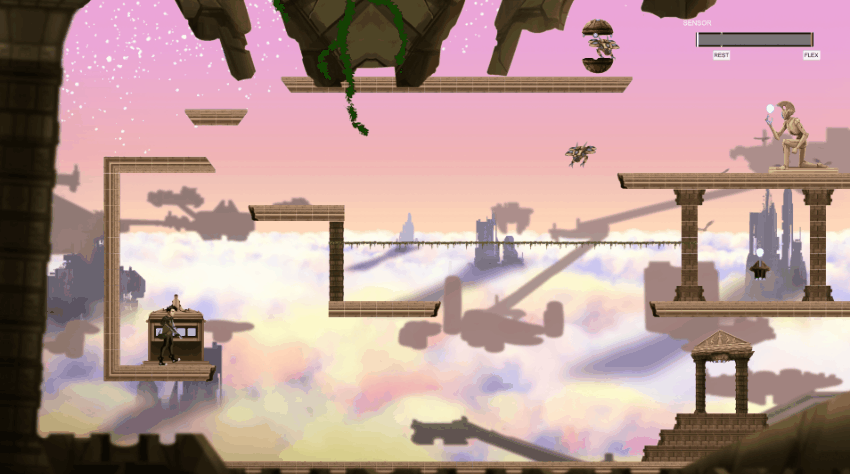

2D Puzzle Platformer
An unnamed 2D Puzzle Platformer made in Unity that I am currently developing with Limbitless Solutions. Limbitless is a nonprofit organization that seeks to empower individuals with accessibility limitations through bionic devices that use electromyographic (EMG) technology to perform certain gestures. You can read more about Limbitless' work here. My team at Limbitless develops video games that use a proprietary controller that reads an EMG signal from the player's muscles. This EMG signal measures how weak or strong that muscle is flexing. The goal of these games is to help players strengthen certain muscles that they might not have used previously and are necessary for using our bionic devices. In this game specifically, players progress by solving puzzles which require using varying levels of flex. In the image above, the slider in the top right represents the amount that the player is currently flexing. The puzzles are designed to test the varying levels of flex required to perform gestures with the bionic devices in real life. As lead gameplay programmer on this game, I am responsible for directing implementaion of all of the varying puzzles and mechanics within the game and ensuring proper utilization of the proprietary controller. I also work with our animation and art teams to make sure their artwork is succesfully implemented within the game.
Technologies Used:
- Unity
- C#
- Photoshop
- Git
Art Credits:
- Emily Lawther, Current Game Design Intern at Limbitless Solutions
- Daniel Schutt, Former Game Design Intern at Limbitless Solutions